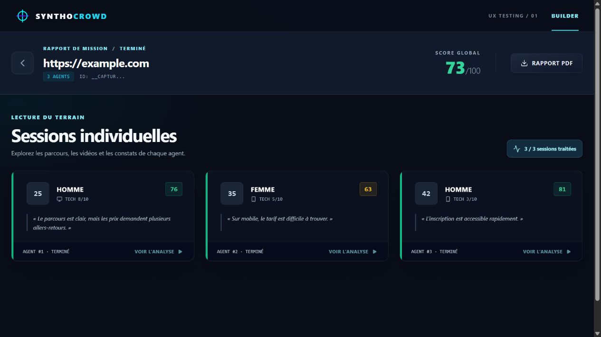

SynthoCrowd
Des agents simulés testent votre interface web.
Testez davantage de parcours à moindre coût avec des agents IA aux profils personnalisables. Donnez-leur une mission sur votre site, puis retrouvez les blocages, les points forts et les améliorations repérés dans un rapport clair.
Une URL et un objectif concret donnent un cap commun à tous les agents.
Une foule qui ne pense pas d’une seule façon.
Composez des profils différents, ajustez leur aisance numérique, leur appareil et le nombre d’agents. Le test couvre plusieurs façons de chercher, comprendre et décider.
Même mission.
Parcours différents.
Chaque agent navigue sur l’interface, choisit des actions et rencontre ses propres frictions. Les sessions restent séparées pour comprendre où les comportements divergent.
Des preuves, pas seulement un score.
La page de résultats relie chaque session à son parcours, aux constats générés, à la vidéo lorsqu’elle est disponible et à un export PDF.

Une lecture par agent, sans mélanger les sessions.
La capture du navigateur, si l’enregistrement est disponible.
Frictions, points forts et améliorations proposées.
Un document exportable pour partager les résultats.
La capture montre des données d’exemple.
Voir le parcours complet.
Cette vidéo présente le Builder, les sessions puis un exemple fictif de rapport textuel avec bugs, points forts et priorités.